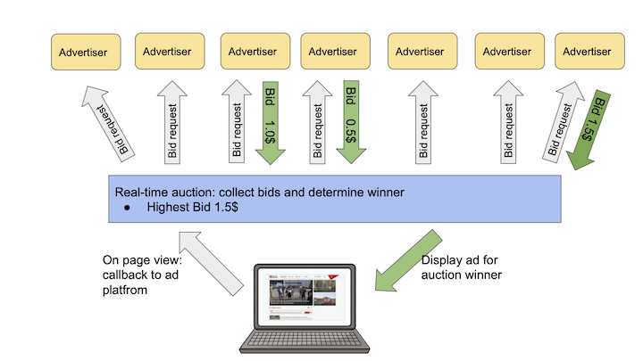

Tue 06 April 2021
Consumer privacy implications of web tracking have been extensively surveyed. Initiatives like Tracking the Trackers are trying to break down which companies track users the most, in an attempt to make online interactions more transparent.
This article documents some experiments in tracking a specific type of advertisement tracker. It contains some exploratory analysis of bidding dynamics in a client-side auctioning technology (Prebid). Inspired by the quantified self movement, this is an attempt at self-experimentation; and a itch I had to scratch to follow up to research I used to do back in the day. I don't claim any statistical significance whatsoever in the figures reported (it's a sample of n=1 subjects). Even though I wear an ad-blocker everywhere I go, I'm interested in learning who is bidding on my attention, and how much they are willing to pay for it.
Over the past decade ad sales have become been largely automated and hyper-personalised. A driving force has been the real-time bidding protocol, that is a technology stack that allows inventory to be sold on a per impression basis, via an auction that happens in under 100ms every time a user visits a web page. Figure 1. shows a typical transaction that happens during a page view.

RTB provides a mechanism to programmatically link supply side platforms (that sell inventory on behalf of a website) with the demand side (who buy inventory on behalf of advertisers). In this market an impression becomes a commodity that needs to be priced. While some theoretical optimality guarantees are offered by the auction model, in practice finding the right price for an impression turns into a set of very interesting optimization problems.
Within this delivery model a supply side platform (SSP) manages a service that runs auctioning logic and offers seats to demand platforms (DSPs) over the RTB protocol. A website would integrate a piece of JS, that would call back into the SSP at each page view. This integration mechanism resulted in a rich ecosystem of technologies that compose the digital advertising market. It also lead to a plethora of parties, and the inevitable shoveling of publisher inventory back-and-forth the value chain. SSPs were supposed to fix this problem, but in practice the programmatic market turned into publishers having to manage a daisy chain of SSP platforms to maximise their revenue.
Enter header bidding: the next big thing that promised to simplify this waterfall model, by pushing auctions in the browser and allowing publishers to offer inventory to multiple exchanges before calling back into and adserver. To me it always sounded like "an SSP on the client", but back when I was working in adtech it was the feature all customers wanted.
Moving SSP logic to the browser has an interesting consequence. Dynamics that previously where observed behind the curtains of the datacenter are now happening in plain sight on a client device.
Header Bidding is a client side technology for auctionining online properties. It allows publishers to offer inventory to advertisers and exchanges simultaneously, before calling into an adserver.
Every time a client visits a webpage (let's say www.theguardian.com), a piece of javascript is downloaded and executes an auction for properties the site would like to monetize (banners, video).
An example of this delivery system is available at https://jsfiddle.net/prebid/bhn3xk2j/458/.
Under the hood the auction Javascript sends out bid requests (GET) to a pool of advertisers the publisher partners with, broadcasting information about the inventory (size, url) and the client (useragent, ip). Advertisers respond to the request with either a valid bid, or with a "pass". Once all bids are collected, an auction is ran on the client and the winning bid (if any passes eligibility criteria) is sent out to the publisher's adserver.
To collect bids data I hacked together a web extensiont that logs Prebid traffic. The goal is to collect a dataset and, over time, be able to answer the following questions:
How much are advertiser willing to pay for my attention?
Who's bidding for me and where?
Can any bidding pattern be identified?
Following are some statistics on a sample of 4678 bid requests, on 172 "auctions", that I collected between 2021-03-13 and 2021-04-05 . The purpose of this analysis is purely exploratory. I'm curious to observe who takes part in auctioning my attention and how much they value it. To protecty my privacy, I won't disclose referrers or temporal information. The current collection methodology makes it very hard to attribute bids to auction. A page might sell multiple pieces of inventory via prebid integrations, resulting in multiple concurrent acutions happening at once. Here I'll be analysing bid activity per visit, per page. This will be the working definition of "auction".
In the reminder of this section I'll try to capture four common metrics in auction analysis: frequency, density, co-occurrency and win rates.
Bidders frequency tells how how often Prebid partners are offered the possibility to take part in an auction. It's a proxy measure of how many third parties can track a user on a give website. Here I'm counting how many bid requests were issued (e.g. how many advertisers were given the option to bid on my attention). For a publisher, a more interesting metric would be how many Prebid partners returned a valid bid (some degree of logging is offered by the webext, but capturing responses is tricky).
The top 5 partners account for 70% of all bid requests, and 35% of the requests in this dataset are issued to Google DoubleClick (DFP) alone.
Bid density tells us how many partners took part in an auction. Since we are tracking bid requests, this metric gives an idea of how many partners are active on a give page during a visit. Given the heuristic definition of auction as bids per visit, per page, we report the following summary stats for auction density.
| Statistic | Value |
|---|---|
| count | 172 |
| mean | 26 |
| std | 61 |
| min | 1 |
| 25% | 6 |
| 50% | 15 |
| 75% | 33 |
| max | 768 |
On average we observe 26 bid requests per auction, with a large standard deviation (61) and a median value of 15 requests per auction. One datapoint stands out where 768 bids where issued during a page view. It was at this referrer: https://brickset.com/article/48472/review-21321-international-space-station. Cool toy, spammy website. The boxplot below (Figure 3) shows that more outliers are present in data.
This metric shows how many Prebid partners are concurrently integrated on a page. That is, how likely they are to take part in the same auction.
We saw that 5 partners make up ~70% of all the bid requests. The heatmap below shows the co-occurence frequency of the top 20 bidders in the dataset: DFP, Amazon, AppNexus, Rubicon, Openx, Index, GumGum, Pubmatic, Criteo, TripleLift, Spotx, Teads, 33Across, PulsePoint, Media.net, RhythmOne, IAS, DistrictmDMX, Sonobi.
Header bidding is an high volume game. Out of the 4500+ bid requests, only 55 bids won an impression. A breakdown of auction winners follows:
| Partner | Impressions |
|---|---|
| appnexus | 18 |
| criteo | 15 |
| teads | 13 |
| openx | 3 |
| rubicon | 3 |
| pubmatic | 2 |
| ozone | 1 |
In terms of revenue, these 7 winners generated a total CPM of 34.6(USD?).
| Partner | Total CPM |
|---|---|
| teads | 18.69 |
| criteo | 4.46 |
| appnexus | 2.61 |
| rubicon | 0.43 |
| openx | 0.30 |
| pubmatic | 0.16 |
| ozone | 0.02 |
Interestingly, the top bidders are scarcely represented. DFP did not win a singe auction (though there is no evidence they did bid at all). Criteo performed relatively well, winning 11% of its bids. Ozone is the best performing partner with a win rate of 25% of its bids, though with revenue approaching 0 (was it fillers?).
| Partner | Win rate (%) |
|---|---|
| ozone | 25.000000 |
| teads | 16.883117 |
| criteo | 11.450382 |
| appnexus | 4.603581 |
| pubmatic | 1.226994 |
| openx | 1.045296 |
| rubicon | 0.826446 |
Over time I'm interested in observing changes in bidding / winning behaviour, and get a better feeling of how many pages integrate Prebid. The latters is a blatant methodological shortcoming of this analysis, where I'm not quantifying the magnitude of the observed data points vs the total number of pages I visit where other types of tracking tech is active.
Being online advertisement a high numbers game, I don't expect to extrapolate anything from a single user, but if this type of work gets any interest it could be interesting to carry out a coordinated effort (following the example of the folks at https://tracking.exposed/).